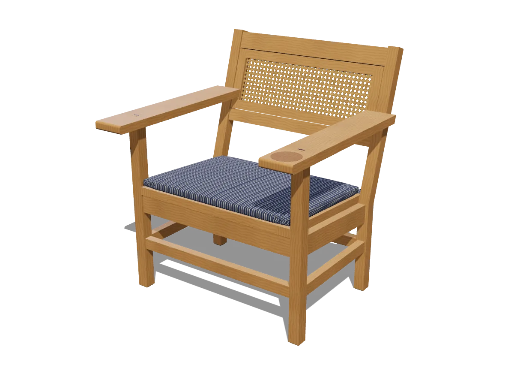
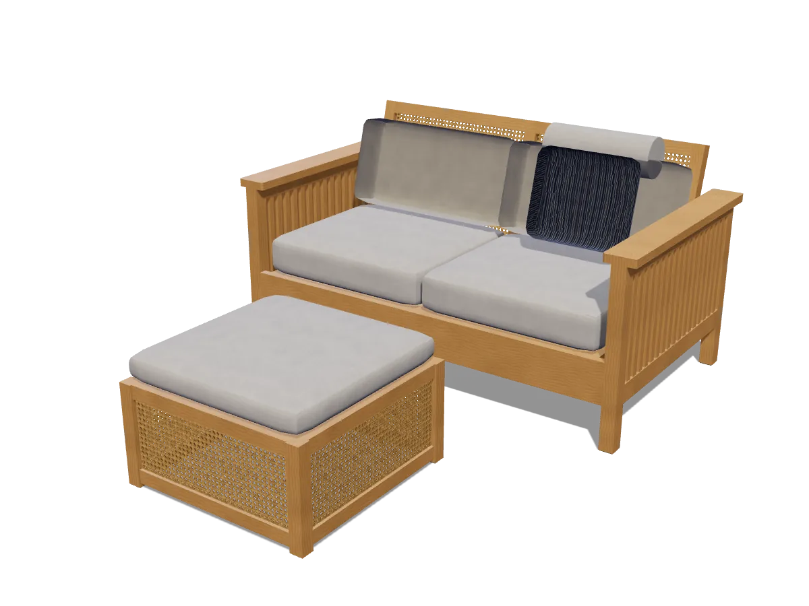
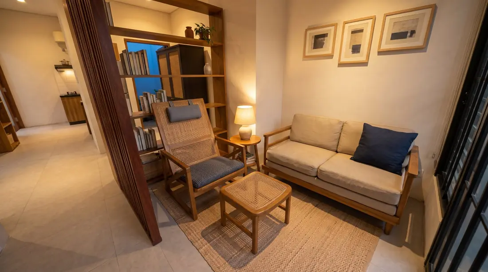
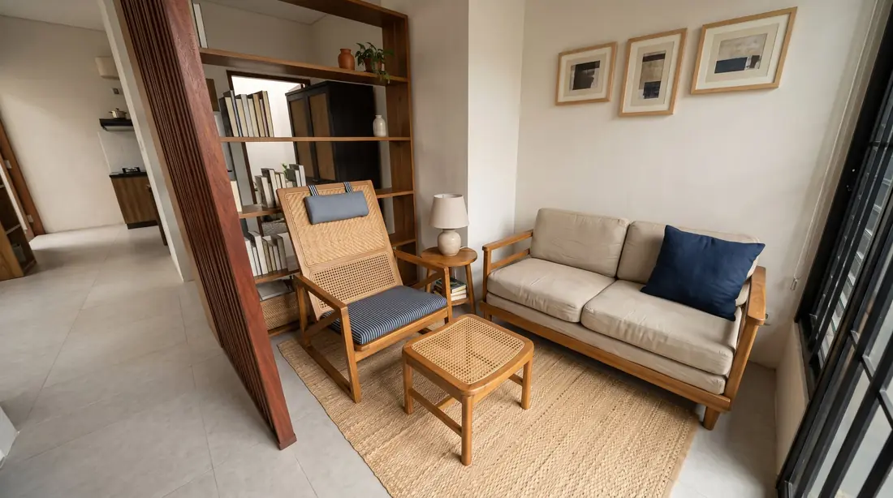
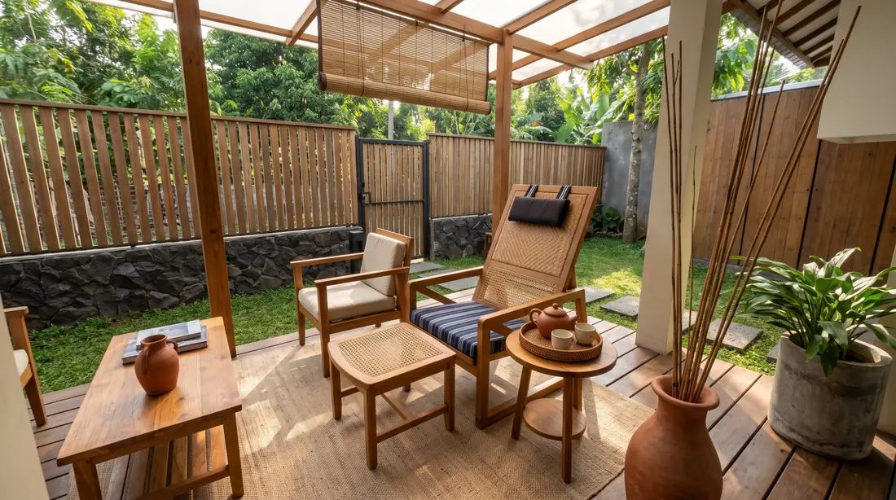
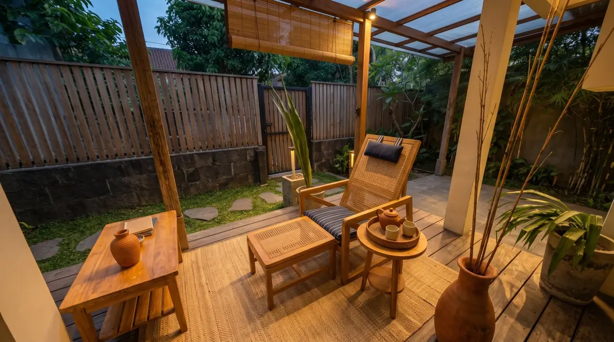
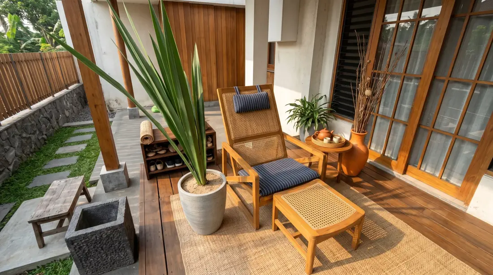
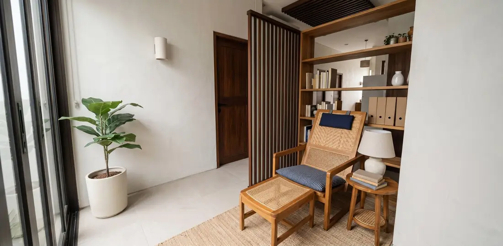

Pameran
Tiga kursi untuk satu ruang tamu. Selonjor untuk melambat, Pinarak untuk menyambut, Srawung untuk berkumpul. Pilih satu kursi untuk memutarnya dalam 3D dan melihat cara membuatnya.
-
 Kursi santai dengan dingklik
Selonjor
Kursi santai untuk melambat
660 × 860 × 1000 mm
Masuki kursi
Kursi santai dengan dingklik
Selonjor
Kursi santai untuk melambat
660 × 860 × 1000 mm
Masuki kursi
-

Kursi tamu Pinarak Kursi yang mempersilakan duduk 680 × 660 × 760 mm Masuki kursi -

Sofa dua dudukan dengan ottoman Srawung Sofa untuk bertemu dan berbincang 1400 × 780 × 763 mm Masuki kursi
Ruang
Satu ruang, tiga suasana
Ketiga kursi disusun dalam satu ruang keluarga berukuran 3,20 × 2,85 m. Denah ini diambil dari penempatan di model SketchUp. Garis tebal di tiap kursi adalah sisi depannya.
- SelonjorPojok istirahat di sisi timur. Menghadap ke barat, dingklik di depannya.
- PinarakKursi tamu di sisi barat. Menghadap ke timur, berhadapan dengan Selonjor.
- SrawungTempat berkumpul di dinding utara. Ottoman menjembatani sofa dengan dua kursi lainnya.
Suasana
Kursi di dalam ruang
Sepuluh gambar suasana untuk membayangkan ketiga kursi dipakai sehari-hari, di ruang tamu, pojok baca, dan teras. Ketuk atau klik gambar untuk melihatnya lebih besar.
 Tiga kursi di teras sore
Tiga kursi di teras sore
Ruang tamu, malam
Ruang tamu, siang
Teras, Selonjor dan kursi lengan
Teras taman, sore Teras taman, jendela kisi menyala
Teras taman, jendela kisi menyala
Teras taman, senja Teras taman, siang
Teras taman, siang
Pojok baca, siang Pojok baca, malam
Pojok baca, malam


Visualisasi AI Gambar ini dibuat dengan AI (Gemini) mengikuti rancangan, bukan foto kursi jadi. Bentuk dan detailnya bisa berbeda dari model 3D dan gambar kerja. Ukuran dan bahan yang berlaku ada di halaman tiap kursi.
Tentang pameran ini
Rancangan yang masih berjalan
Ketiga kursi dirancang dari nol di SketchUp, lengkap dengan bahan, sambungan, dan rotannya. Belum ada yang dibuat jadi, jadi semua gambar di sini adalah model 3D atau visualisasi.
Sudah punya gambar kerja lengkap. Ukuran, sambungan, dan urutan rakit di halamannya diambil dari lembar gambar tersebut.
Ukurannya diukur dari model 3D. Urutan rakit dan detail sambungannya masih hipotesis dan akan dicocokkan dengan gambar kerja nanti.
Perkiraan biaya memakai harga satuan estimasi yang belum dicek ke penjual. Semua angkanya bisa kamu ubah di halaman tiap kursi.